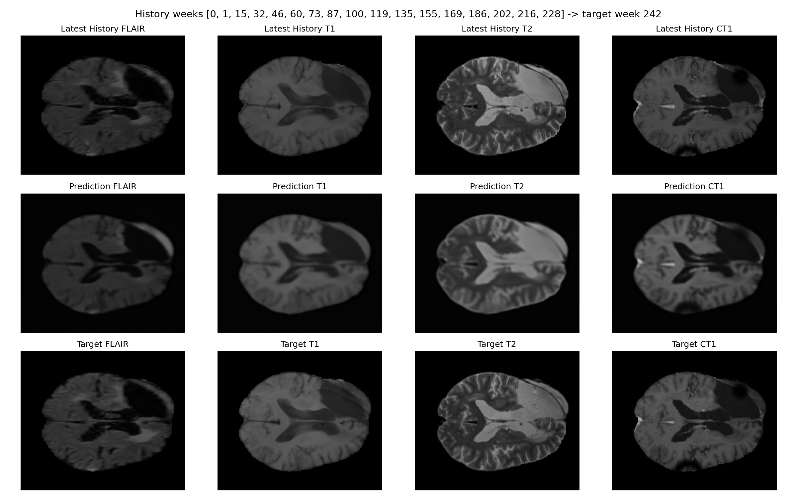
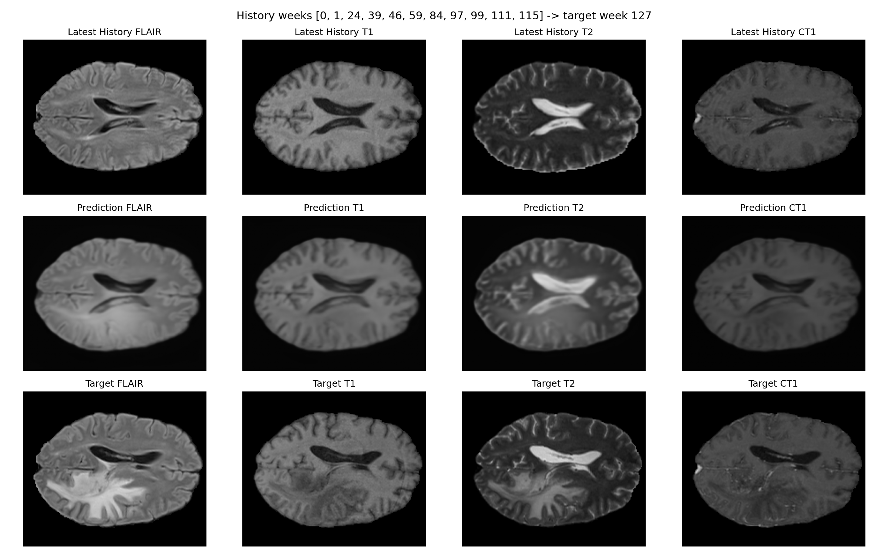
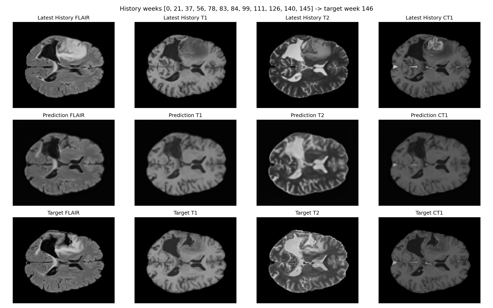
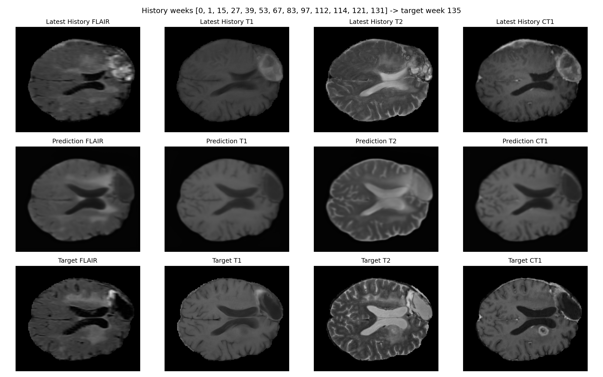

Current Checkpoint
The checked-in aggregate table summarizes the local
lumiere_full_v1_* runs using the best available metric
split per patient, preferring holdout metrics when present and
otherwise falling back to older all-sample summaries.
Tracked artifacts
The repository now includes tracked aggregate outputs in
results/lumiere_full_v1_metrics.csv,
.json, and .md so the top-line cohort
numbers are generated from versioned files rather than copied
into prose by hand.
Runtime provenance
Each run summary now records Python, Torch, NumPy, requested device, resolved device, and per-split metric CSV paths. The pipeline also exports train, holdout, and baseline CSV tables for every run directory.
Top Runs
These rows come directly from
results/lumiere_full_v1_metrics.md. At the moment they
all use the all split because the older full-run
summaries predate the holdout-aware schema.
| Patient | Split | Samples | Model MSE | Baseline MSE | Improvement |
|---|---|---|---|---|---|
| Patient-028 | all | 7 | 0.00386073 | 0.0123518 | +68.7% |
| Patient-004 | all | 6 | 0.00336998 | 0.0104322 | +67.7% |
| Patient-066 | all | 8 | 0.00379933 | 0.0114351 | +66.8% |
| Patient-077 | all | 8 | 0.00324765 | 0.00911861 | +64.4% |
| Patient-031 | all | 17 | 0.00351799 | 0.00956643 | +63.2% |
Final publication claims should come from a frozen rerun where every
row uses metric_split=holdout.
Manuscript Figures
Representative figures are checked into the repository as static manuscript assets. They remain useful as qualitative examples, but the quantitative claims on this page are driven by the tracked result tables.
Patient-073

Patient-023

Patient-015

Patient-006

Publication Track
The repository now has a concrete protocol for a frozen rerun. The remaining gap is not infrastructure; it is executing the final cohort run with consistent holdout reporting and manuscript figures regenerated from that run prefix.
What is locked down
Registration manifests, per-run metric CSVs, result aggregation, smoke data generation, explicit device selection, and GitHub Actions validation are all in place.
What still defines publication
A final lumiere_publication_v1 rerun should use the
tracked publication protocol, require holdout rows for every
included patient, and regenerate the aggregate table with
--split holdout.